Logging in to Google Earth Engine
What is Google Earth Engine?
Google Earth Engine (GEE) is a cloud-based platform that lets you access and analyze massive amounts of satellite imagery and geospatial data without needing a powerful computer. Think of it like a library in the cloud where you can browse and analyze global imagery from the past few decades in real-time.
Important concepts:
- Cloud-based means the computing happens on Google's servers, not your laptop
- Satellite imagery is pictures of Earth taken from space
- Geospatial analysis is analyzing data about locations on Earth
Why Do We Need a Google Cloud Project?
Google Earth Engine operates through something called a "Google Cloud Project" — this is essentially your account workspace within Google's cloud system. It's like opening a lab notebook where your GEE work gets organized and tracked. You need this project to:
- Access satellite data
- Run your analyses
- Keep track of your work
- Get compute resources (processing power) from Google
Learning Objectives
By the end of this guide, you will be able to:
- Log into Google Earth Engine
- Create your first Google Cloud Project
- Register your project for non-commercial educational use
- Enable the Earth Engine API (the tool that lets you use GEE)
- Select your project so you can start analyzing data
- Share your work with instructors and classmates
Step-by-Step: Setting Up Your Google Earth Engine Account
Step 1: Access Google Earth Engine
- Go to https://code.earthengine.google.com/
- Log in using your Google account (or Stanford account if you're a Stanford student)
- If you don't have a Google account, create one first at google.com
- Accept the terms of service
You should now see the Code Editor interface. This is where you'll write scripts and analyze satellite data. The interface has several key areas:
- Code Editor (left side) - where you write your code
- Map (center/right) - where results are displayed
- Console (bottom right) - where messages and results appear
- Assets (left sidebar) - where you can store data
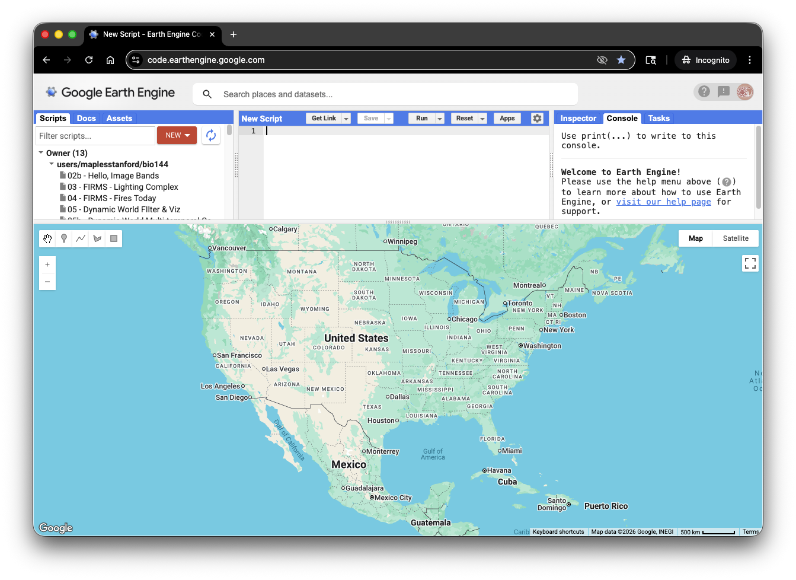
Step 2: Create a New Google Cloud Project
Now you need to create a Google Cloud Project. This is like creating a new workspace where your GEE account lives.
- Click on your Profile Icon in the top right corner of the Code Editor
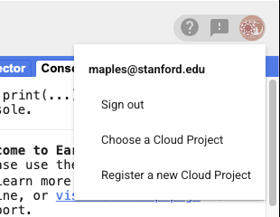
- Select Register a new Cloud Project
- Enter a Project name (be descriptive, like "Earthsys144" or "GIS-Analysis-Spring2026")
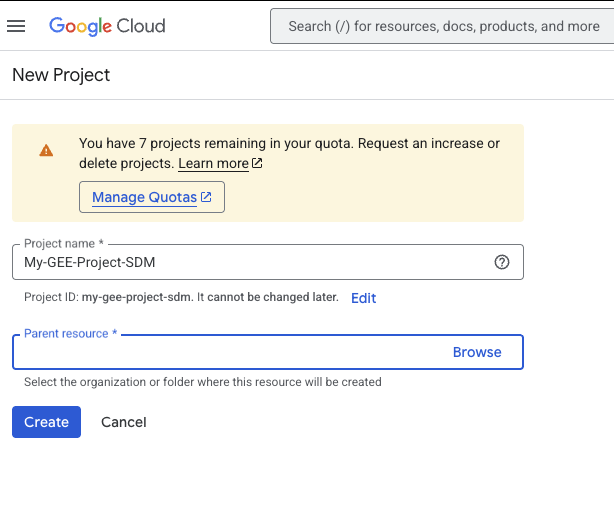
- Click on the Parent resource > Browse link
- Select "GEE Student Projects" from the list
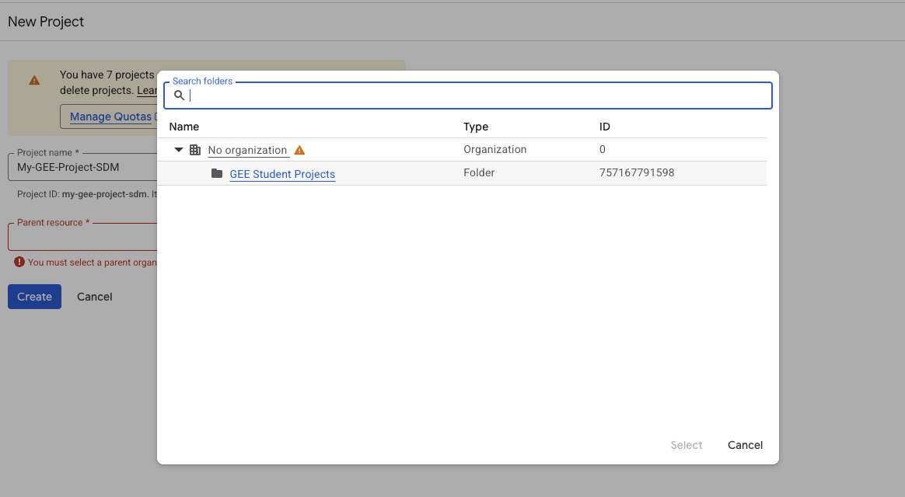
- Click the Create button to mint your new project
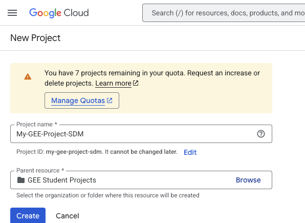
The system will now create your project. This may take a moment.
Step 3: Access the Configuration Dashboard
Once your project is created, you should automatically go to the Configuration Dashboard. If not:
- Click on your Profile Icon again
- Select Select Project
- Choose the project you just created
- Click Select
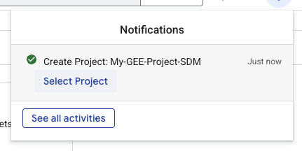
Note: The Configuration Dashboard is where you configure permissions and settings for your project. Make sure you're viewing the correct project name before proceeding.
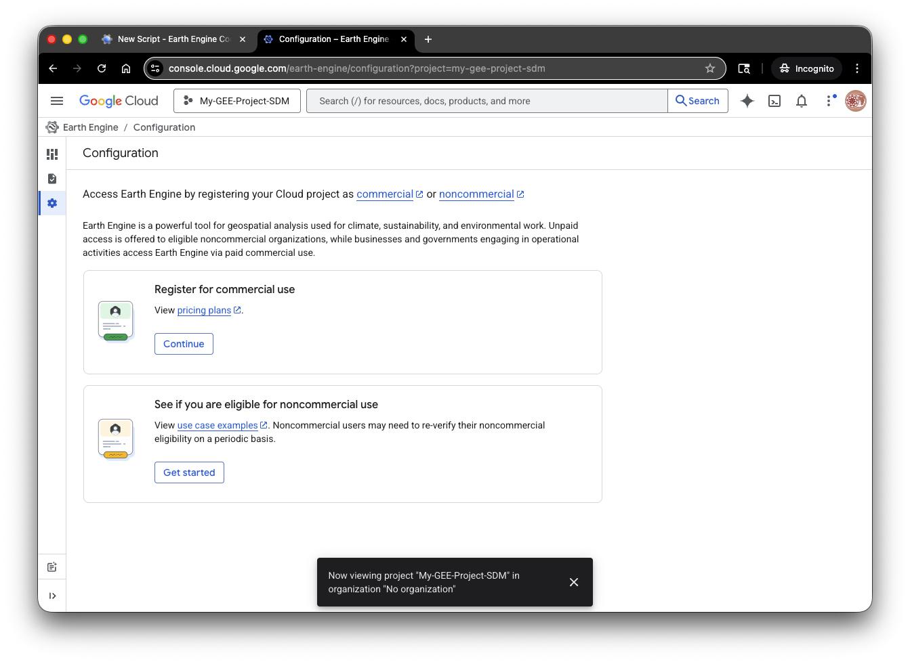
Step 4: Register Your Project for Non-Commercial (Educational) Use
For this course, you'll register your project as a non-commercial educational project, which gives you access to GEE's data and computing power without needing a credit card.
- In the Configuration Dashboard, click on See if you are eligible for non-commercial use > Get Started
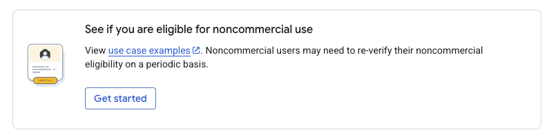
- Fill out the registration form with information about your use case:
- Select "Research & Education" as your primary use case
- Confirm that your use is non-commercial
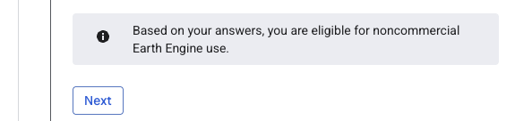
- Click Check Eligibility
- When asked to choose a compute tier, select "Community"
- Community tier is designed for students and small research projects
- It provides free access with reasonable computing limits
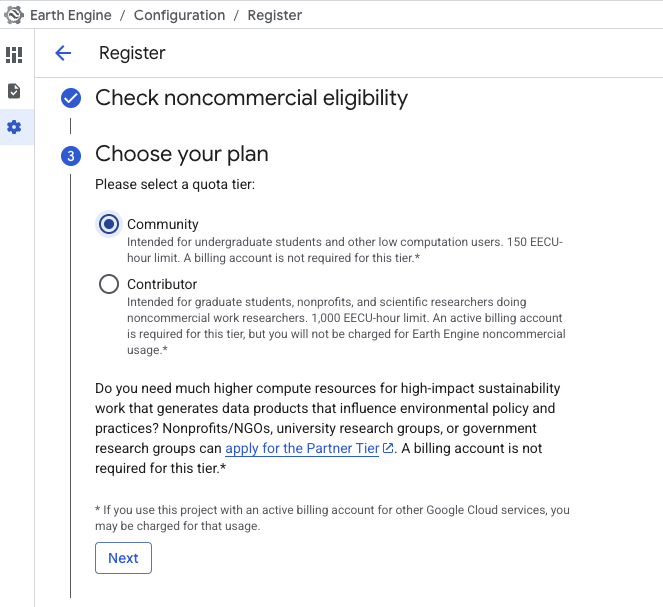
- Complete the remaining registration steps by filling out any additional forms
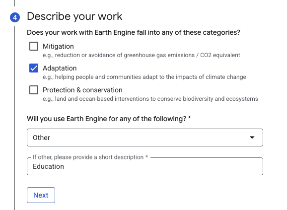
- Click the Register button to complete the process
Step 5: Enable the Earth Engine API
After registration completes, a pop-up window should appear asking you to enable the Earth Engine API. The API is what actually lets your project use Google Earth Engine.

- Click the Enable link in the pop-up window

- You may be taken to a Google Cloud Console page — this is normal
- If prompted, confirm the API enablement
Step 6: Select Your Project in Earth Engine
Now you need to tell the Code Editor which project to use.
- Return to the Code Editor window
- Click on your Profile Icon (top right)
- Select Select > Choose a Cloud Project
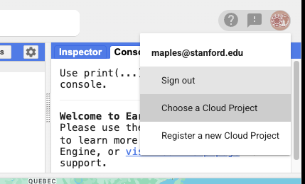
- Find and select the project you just created
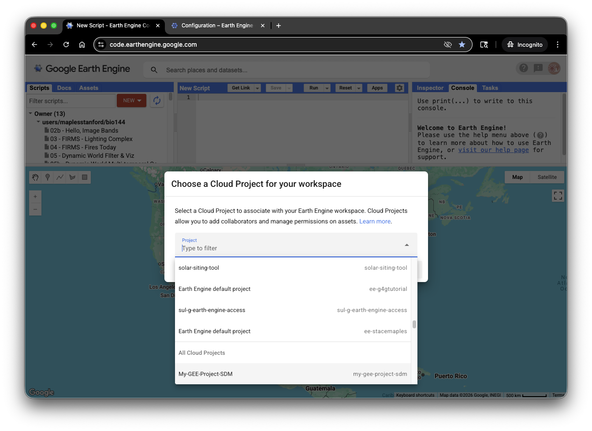
- Click the Select button
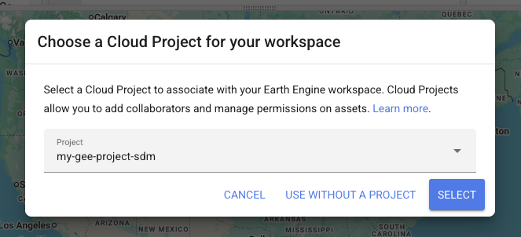
Congratulations! Your project is now active in the Code Editor.
Step 7: Test Your Setup
To verify everything is working:
- You should see your project name in the top-right corner of the Code Editor
- Try running a simple test script to confirm access
- If you don't have a script, you can use this sample: https://code.earthengine.google.com/f983a2d843739e23ffb77f336ad6d4fb
- Click Run to execute the script
- You should see results appear on the map within a few seconds
Sharing Your Work
How to Share Your GEE Scripts
When submitting assignments, you'll need to share your GEE scripts with your instructor. Here's how:
- In the Code Editor, click the Share button (top menu)
- Copy the link that appears (or click "Get Link")
- By default, this creates a "view-only" link that lets others see your code but not edit it
- If you want others to edit, you can change permissions to "Editor" (not typically needed for homework)
- Test the link by opening it in an incognito window to make sure it's accessible
- Include this link in your homework submission
Best Practices for Sharing
- Always test your shared links before submitting
- Use view-only access for homework submissions
- Include a brief description in your script comments explaining what it does
- Make sure your project name is descriptive so instructors know it's your work
Troubleshooting
I don't see the pop-up to enable the Earth Engine API
- Check your browser's pop-up blocker settings
- Try the process again
- Manually navigate to Google Cloud Console if needed
My project won't initialize
- Log out and log back in
- Try a different browser
- Clear your browser's cookies and cache
- Contact your instructor for help
I can't find my project in the "Select Project" menu
- Make sure you completed the registration form
- Wait a few minutes and refresh the page
- Create a new project if the old one won't appear